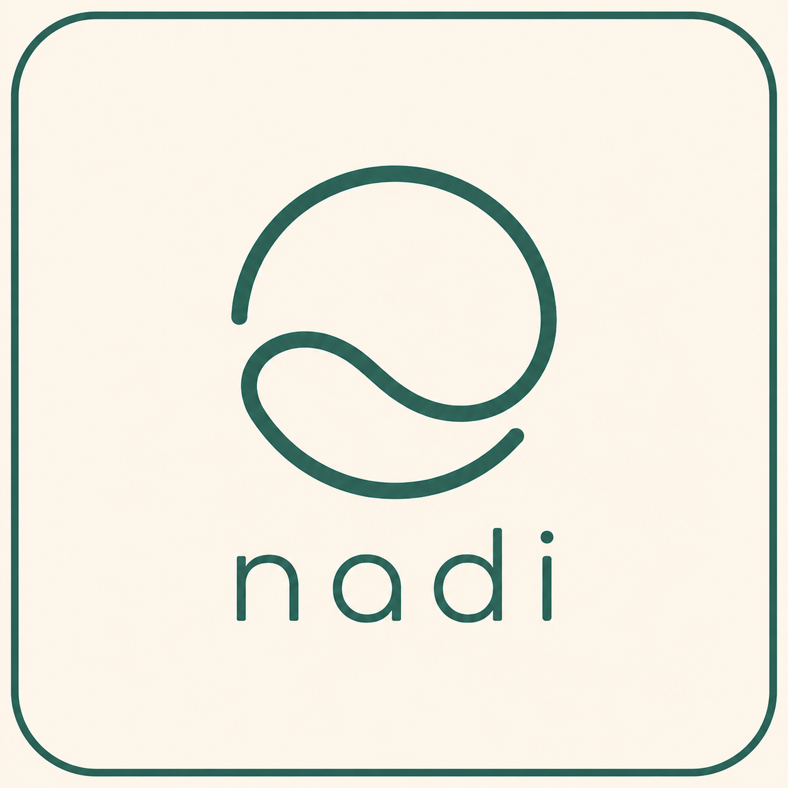

個人 life-signal tracking system
設計決策簡報 · Functional / NFR / API / Architecture / Deep Dive
內容整理自 docs/system-design.md、architecture.md、api-design.md
使用者應該能做什麼？MVP 刻意不做什麼？
number：睡眠時數、喝水量boolean：是否運動、是否喝咖啡scale：頭痛程度、焦慮程度text：自由描述資料、安全、效能、離線與可擴展性的設計取捨
user_id 從 session 推導，不信任 request bodyonline 事件時執行version 做 optimistic concurrency，衝突需後續處理REST、驗證邊界、資源契約與 sync contract
/v1GET/POST/PATCH/DELETE /v1/items
GET/POST/PATCH/DELETE /v1/records
GET /v1/reports/summary
GET /v1/reports/correlation
POST /v1/sync/push
POST /v1/sync/pull
POST /v1/account/device-linkversion optimistic concurrency checkvalueTypePOST /v1/records
{
"itemId": "uuid",
"value": 6.5,
"recordedAt": "2026-06-17T08:00:00.000Z",
"note": "睡得偏淺"
}GET /v1/reports/summary
GET /v1/reports/correlation
POST /v1/sync/push
{
"deviceId": "...",
"operations": [{
"operationId": "...",
"entityType": "record",
"operationType": "create",
"entityId": "...",
"baseVersion": 1,
"payload": { ... }
}]
}
POST /v1/sync/pull
{
"deviceId": "...",
"checkpoint": { "until": "...", "cursor": "..." }
}Pull 使用 checkpoint + cursor 分頁，降低多裝置大量變更時的遺漏風險
Runtime 架構、元件分工與資料模型
Client PWA
│
├─ IndexedDB (local-first UI)
│
│ HTTPS
▼
Next.js on Vercel
│
├─ Route Handlers / Server Actions
├─ Auth middleware (Better Auth)
├─ Validation + Service layer
│
▼
Neon PostgreSQL (Drizzle ORM)前期刻意不引入：Redis、Message Queue、Object Storage、Microservices
users
items (user-defined tracking definitions)
records (time-series observations)
report_snapshots (optional, for heavy reports)
sync_device_sessions (per-device checkpoint state)user_id 隔離recorded_at 以 UTC 儲存，UI 再轉時區items(user_id)
items(user_id, type)
items(user_id, archived)
records(user_id, recorded_at DESC)
records(user_id, item_id, recorded_at DESC)
records(item_id, recorded_at DESC)對應常見查詢：全部紀錄、單一 item 趨勢、報表時間區間聚合
關鍵設計判斷、取捨與 edge cases
系統核心不是固定欄位，而是讓使用者自己定義觀察項目。
daily_records {
sleep_hours,
coffee_count,
headache_level
}items → 定義項目
records → 儲存觀察EAV-like，但不過度泛化
不優先 DynamoDB / Firebase：探索式分析與 ad-hoc query 成本較高
核心判斷：
這不是待辦 App，而是個人時間序列資料分析系統"description":
"在目前資料中，頭痛發生前 24 小時內，
睡眠時間偏低時較常出現頭痛。"device-link，避免隱性資料覆蓋client_generated_id 去重report_snapshots 預計算 + Cron / worker原則：不要為尚未發生的效能問題過早引入複雜基礎設施
Next.js PWA + Vercel + Neon Postgres + Drizzle + Better Auth
第一版重點：
1. 快速建立自訂項目
2. 低摩擦紀錄 daily signals
3. 探索 symptom 與其他紀錄之間的可能關聯詳細文件： system-design.md · architecture.md · api-design.md